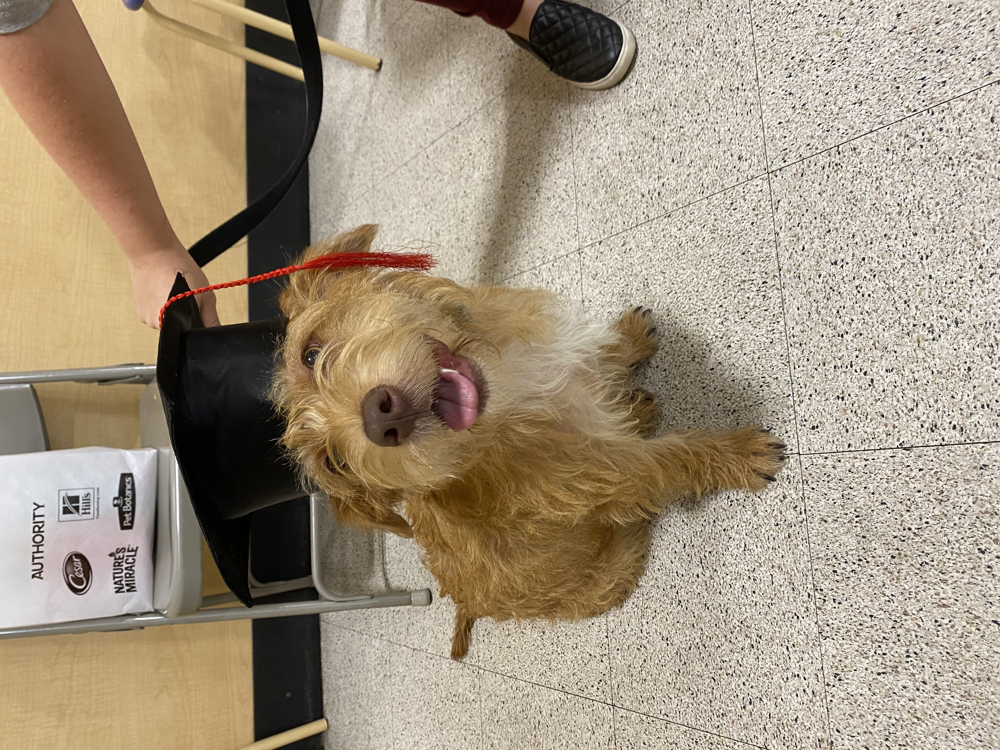
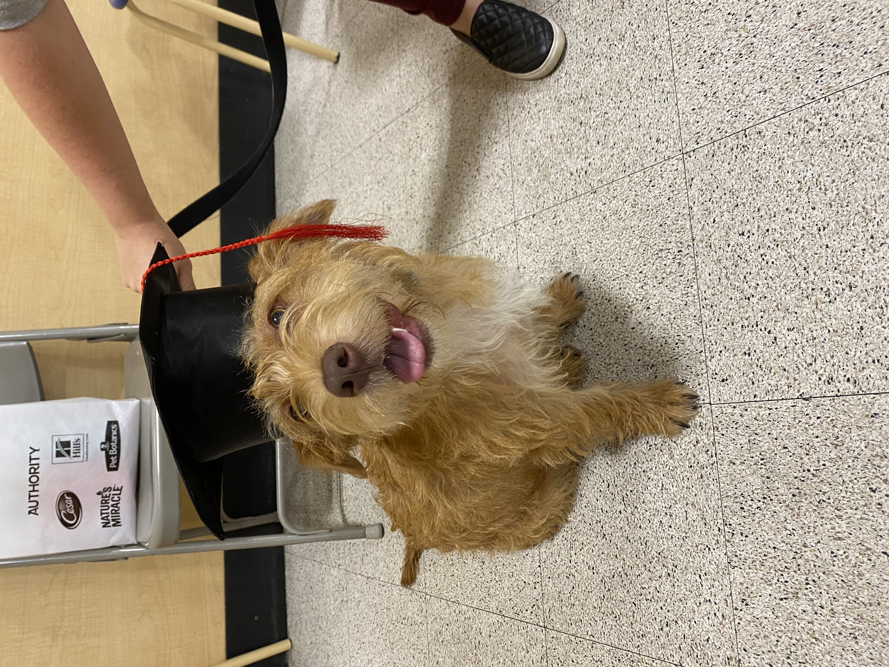

About
This is text used for reference to make a better website. This is text used for reference to make a better website. This is text used for reference to make a better website. This is text used for reference to make a better website. This is text used for reference to make a better website. This is text used for reference to make a better website. This is text used for reference to make a better website. This is text used for reference to make a better website. This is text used for reference to make a better website. This is text used for reference to make a better website. This is text used for reference to make a better website. This is text used for reference to make a better website. This is text used for reference to make a better website. This is text used for reference to make a better website. This is text used for reference to make a better website.
Contact
This is text used for reference to make a better website. This is text used for reference to make a better website. This is text used for reference to make a better website. This is text used for reference to make a better website. This is text used for reference to make a better website. This is text used for reference to make a better website. This is text used for reference to make a better website. This is text used for reference to make a better website. This is text used for reference to make a better website. This is text used for reference to make a better website. This is text used for reference to make a better website. This is text used for reference to make a better website. This is text used for reference to make a better website. This is text used for reference to make a better website. This is text used for reference to make a better website.